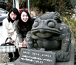
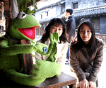
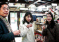
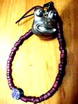
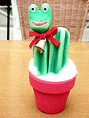

|
橋のたもとに無事カエル！耶馬渓カエルを初詣！ 【福岡発=げこげこ大王７世直筆】カエラーのみんなは、どんな一年の始まりを過ごしたのであろうか。大王は、今年も福岡市のカエラー３人とともに、筑紫耶馬渓の橋のたもとにあるカエルに会いに、カエル初詣の旅にでかけたぞーっ。このカエルは、平成12年11月28日号で紹介した、福岡市の大ちゃんからの通報で発見されたカエルで、石製の親子カエルで、親の背中に２匹の子カエルが乗っているのである。 筑紫耶馬渓といえば、青の洞門で知られる場所だが、大正時代に建設された石造りの見事な橋があることでもしられている。 ３匹のカエルは、旅人の安全を守るために、来る日も来る日も旅人を守っていたのである。ありがとーーーーーー。
 大王と、ぴのこ、りょーこさん、しげやんの４人は、福岡から長駆、大分県の山間地まで訪問して、カエルと無事に対面することができた。
日田市民もカエルで歓迎！ 途中、日田市豆田に立ち寄り、昼食をしたさいに、なぜだか『ありがとうございま』と墨書された板をかかえたカーミットが、机の上に乗っていたり、草野薬局の磨かれた店内には、見事に手入れされたケロチャン人形薬局店頭バージョンがでむかえてくれたりと、さすがにカエラーの一行が行くところいたるところに、カエルが出迎える状態なのは、まー当然といえばとうぜんなのですが、我々のためにカエルを目立つように準備してくれる、大分県の人々のあたたかい気持ちに触れることができて、とっても幸せでした。耶馬渓出発の前に、築１００年はたつという酒屋に入った一行は、地元の名酒『薫長』を角打ちで賞味した。新年を酒から始められるなんて幸せである！ 耶馬渓カエルと対面を果たした後は、天瀬温泉につかり、旅の疲れを癒した後に、再び日田に戻り、酒蔵を改装したという料理店でご飯をたべて、とっても幸福な、正月の一日でしたあああああああ。
カエラーのみんなは、どんな正月を過ごしたのであろうか。
茶碗を井戸に見立て、蛙が世間を見聞！【日本発=Charlie / w（＠＿＠）w同志記者】会社のホームページに蛙のページがあります。趣味で作った陶器の蛙です、ご笑覧下さい。一つずつ、あるいはグループごとに銘があります。例えば／井の中の蛙大海を望む／これは茶碗を井戸に見立て蛙が世間を見聞している所です。まだまだ沢山ありまして、そのうち全部ホームページにのせる予定です。【全国かえる奉賛会】うーむ。。すばらしい！カエル陶芸作品を会社のページで公開する。見習いたいカエル精神である。実は、大王もその昔、カエルページを会社のサーバではじめたのだが、そのうちに自立したという歴史的経緯がある。
何事も、カエルは来る人を増やすという御利益があるので、まだまだ人が少ない場合には、入り口にカエルをおまねきして、多数の客人がやってくるようにしようではないかあ。
フジテレビHPに『カエルの塔』出現！【福岡発=欲望OL蘭子様】ご存知かもしれませんが、フジテレビHPのエンタテインメントゾーン内に”カエルの塔”というゲームがありました。ちなみに私は55秒かかりました。
【全国かえる奉賛会】大王は、６分以上かかってしまった。くやしいー。いまから夜を徹して挑戦し、蘭子さまの記録を更新したいとおもいます。フジテレビも、カエル化ありがというございまするうう。今年もよろしくねー。
  ２１世紀もよろしく！カエルサボテン、カエルのモローストラップ！【ケロ天市場発表】正月休みを返上してカエル職人たちの増産がつづいているが、なにぶん、手作業なので生産がおくれ気味である。でも、今年も発売しますからねー。よろしく。カエルサボテンと、モロー商会の今年の販売計画は未定だが、とりあえず、ケロ天市場ここチェックしてくれい
一瞬の迷いが永遠の後悔！ということわざをカエラーの肝に銘じて、まずは衝動買いからはじめてみましょう。
投稿採用者に武功カエル徽章を授与！ |
かえる古新聞過去に取り上げた記事を見出し付きで一覧したい人は、ここをクリック◆創刊号を見る◆先週号を見る◆話題の号を見る◆かえる新聞の昔を読む◆COOL NET FROG RANKING !
|
私も入っています。。全国かえる奉賛会
大王様に会うには、このバナーをクリック。ずっと奥に写真館があるぞ。全国かえる奉賛会に入会するには、自分のホームページのどこかに、下の部分を追加するとバナーがリンク付きで表示されるぞ。どんどん入会しましょー |


|